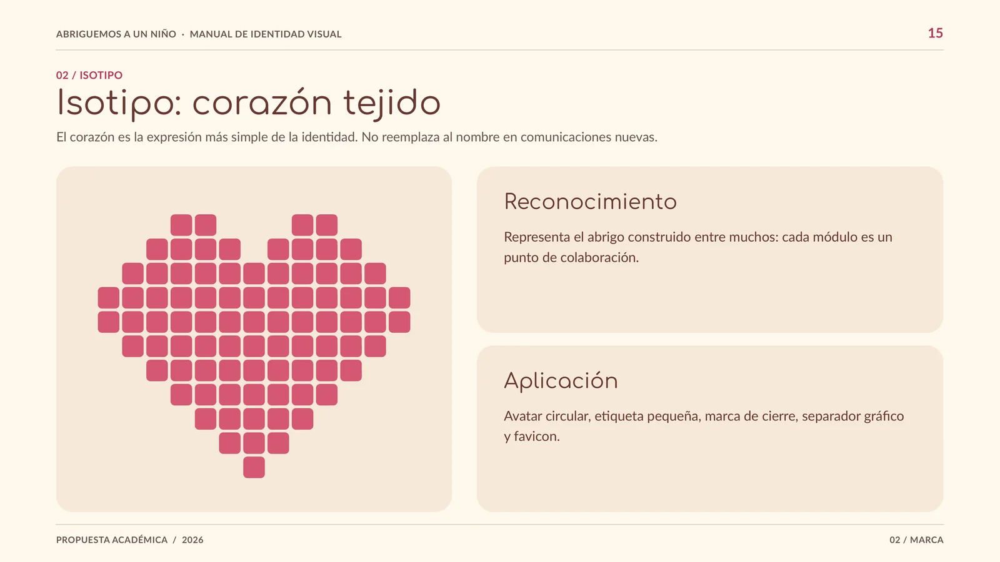
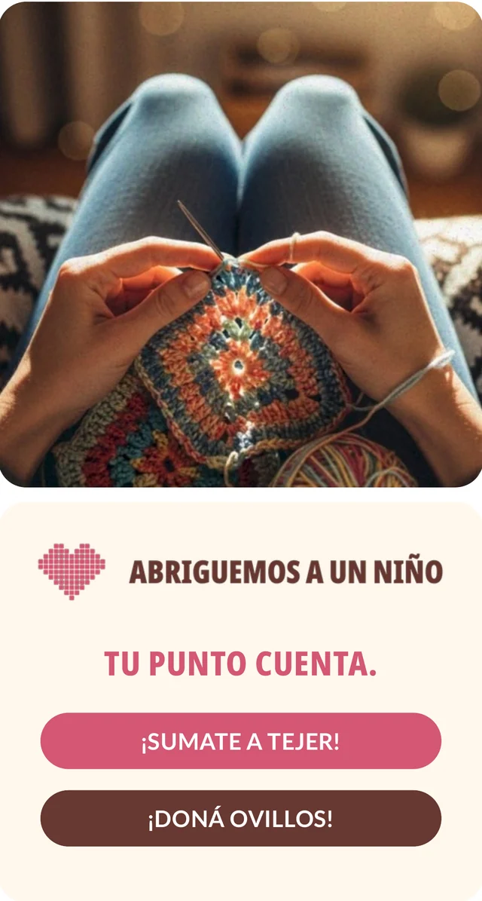
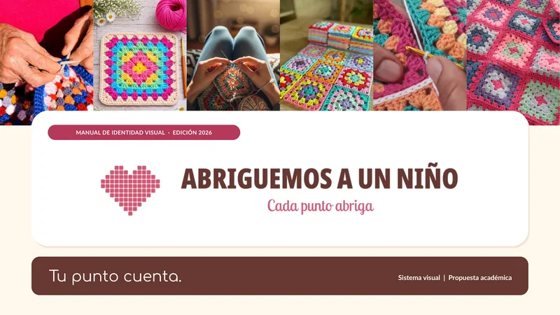
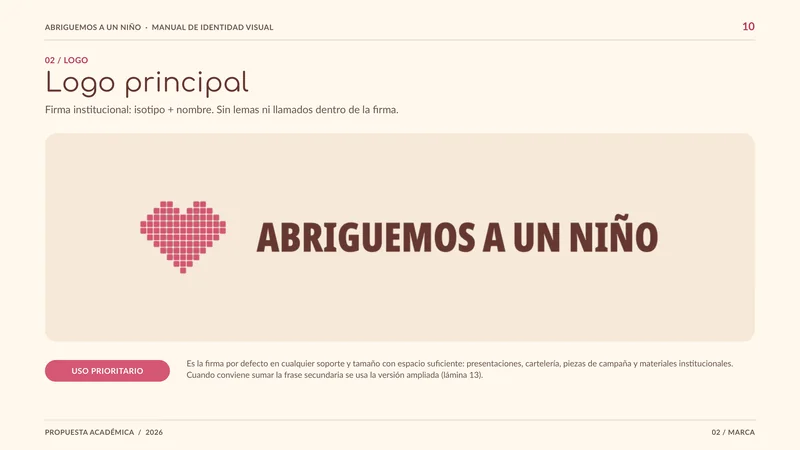
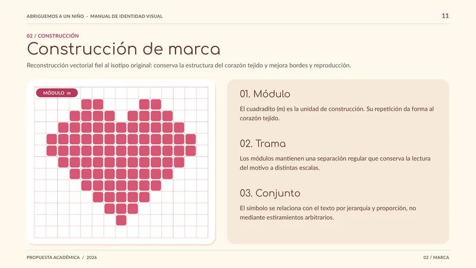
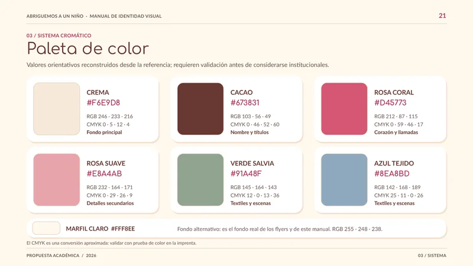
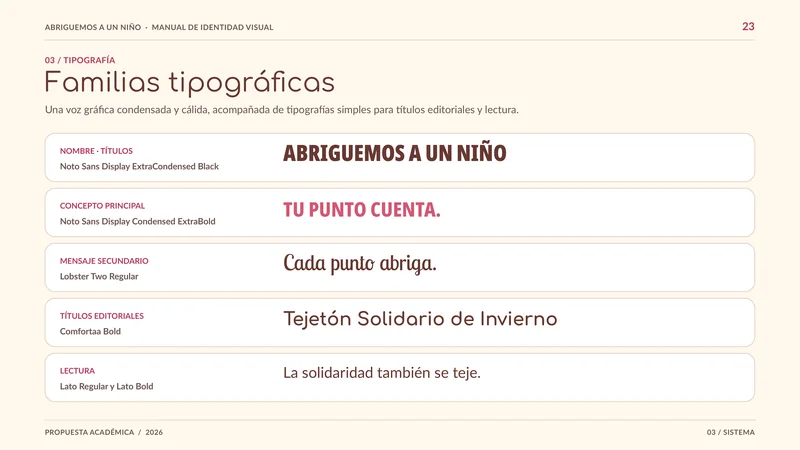
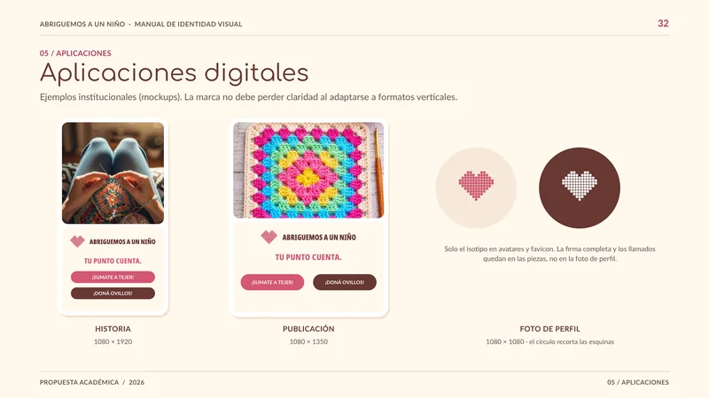
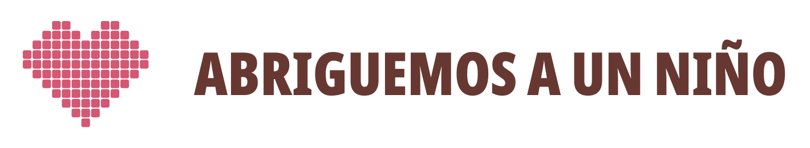

Abriguemos
a un Niño.
Diseño de identidad visual y sistema gráfico para una propuesta de comunicación solidaria. Una identidad cálida y reconocible, pensada para acompañar la convocatoria a tejer cuadrados y donar ovillos para mantas.


El manual por dentro
40 páginas · 6 capítulos.
Fundamento, sistema de marca, color y tipografía, universo gráfico, aplicaciones y validación. Una selección de páginas reales del documento.
-

01Portada
-

10Logo principal
-

11Construcción de marca
-

21Paleta cromática
-

23Tipografías
-

32Aplicaciones de marca
01 · El desafío
Dar coherencia visual a una propuesta solidaria.
El proyecto académico plantea un Tejetón Solidario de Invierno. La comunicación debía mantener el foco en dos acciones concretas —sumarse a tejer cuadrados y donar ovillos— mediante un lenguaje visual cálido, legible y consistente.
02 · El sistema de identidad
Una marca, múltiples aplicaciones.
Firma gráfica
Organización del isotipo de corazón tejido y el nombre de la campaña en una versión clara y reproducible.
Paleta y tipografías
Definición de colores, contrastes, jerarquías tipográficas y reglas de uso para mantener la unidad visual.
Aplicaciones de marca
Lineamientos para flyers, piezas digitales, recursos gráficos y comunicaciones del proyecto académico.

03 · Mi contribución
Diseño y dirección visual del manual.
Mi participación estuvo centrada en el desarrollo y diseño del Manual de Identidad Visual y la coordinación de su sistema gráfico. El trabajo forma parte de una propuesta académica colectiva, con otras tareas y aportes de mis compañeros.